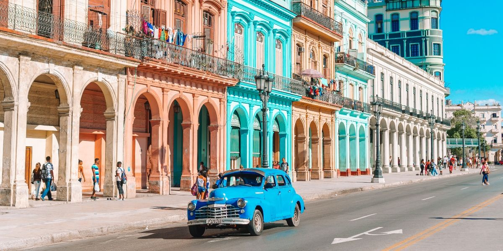
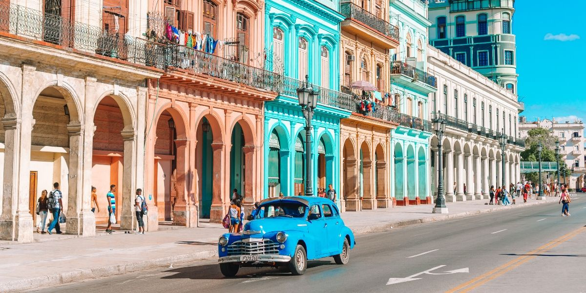

Kuba letovanje - Kuba je jedinstvena! U modernom svetu u kome blede granice i razlike između država i kultura, Kuba
se izdvaja svojom autentičnošću.
Kuba putovanje avionom / Putovanje na Kubu - Republika Kuba je arhipelag u severnim Karibima koji se nalazi između
Karipskog mora, Meksičkog zaliva i Atlanskog okeana. Severno od Kube se nalaze Sjedinjene Američke Države i Bahami,
na zapadu Meksiko, na jugu Kajmanska ostrva i Jamajka, a na jugoistoku Haiti. Letovanje Kuba 2022/2023 - Kubu
doživljavamo kao jednu od najegzotičnijih država i destinacija na svetu pre svega zbog njene istorije i prkosa a
onda i zbog prelepe prirode, plaža, ruma i mora. Kuba letovanje 2022/2023!
Aranžmani Kuba i njeno indijansko stanovništvo (Taino, Siboni i Ganajatabi) su okupirani od strane Španaca u
šesnaestom veku. Borba za nezavisnost kolonije je počela 1868. i nastavila je tokom devetnaestog veka do
špansko-američkog rata 1898. godine. SAD su okupirale ostrvo i držale ga do nezavisnosti 1902. godine, a i nakon
toga su imale najveći uticaj na ostrvu. Ernesto Če Gevara, Fidel Kastro, Raul Kastro i njihova pobunjenička armija
su bili jedna od mnogih partizanskih grupa koje su se suprostavile diktatoru Batisti. Kastrov 'Pokret 26. jul' je
preuzeo vlast na Kubi 1959. godine. Kuba 2022/2023! Rezervišite!
Kuba aranžmani - Nakon pobede nad Batistinim oružanim snagama država je nacionalizovana (nešto slično se dogodilo i
u SFRJ) a odnosi sa SAD zaoštreni do današnjeg dana. U vreme kada je Batista srušen, 75% kubanske zemlje je bilo u
vlasništvu stranaca (najviše amerikanaca). Putovanje - Kuba je zemlja prelepih peščanih plaža i kraljevskih palmi,
legendarnih revolucionara, zemlja ruma i cigara, ponosnih građana svih boja kože u čijim venama teče muzika,
zaraznog smeha i zanosnog njihanja bokova u ritmu salse ili rumbe.
Kuba se ne zaboravlja! IzaberIte Kubu kao vašu novu turističku destinaciju i egzotično putovanje, upoznajte Havanu,
grad koji živi u prošlosti, posetite Varadero, poznato letovalište u kome ćete se osećati kao u bajci. Dođite da se
dogovorimo! Kuba putovanje 2022/2023!
Ponuđeni hoteli su samo jedan od predloga za vaše putovanje, u prilici smo da vam ponudimo hotele svih kategorija sa
različitim vrstama usluge.